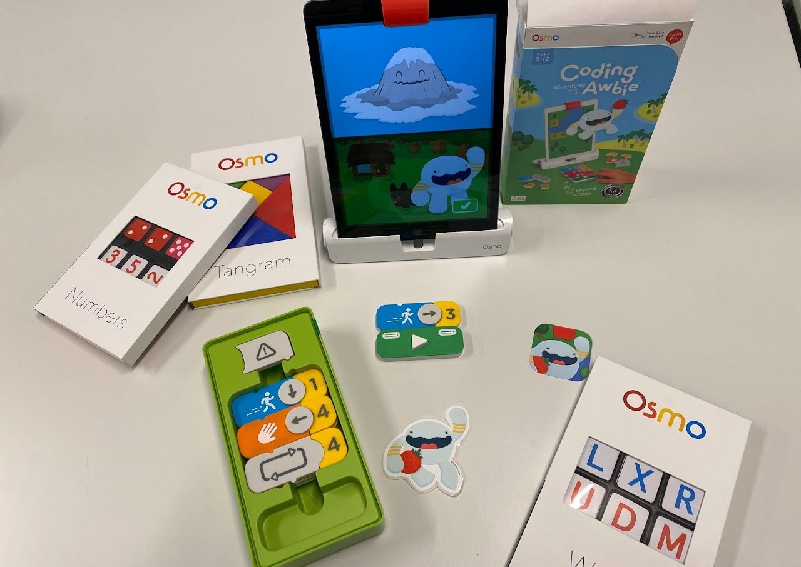
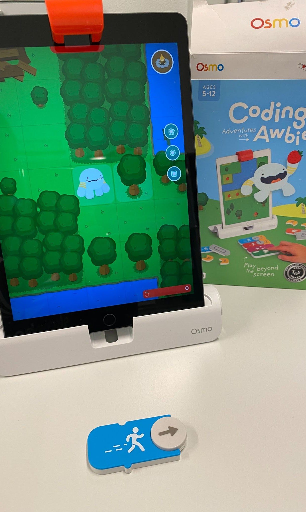
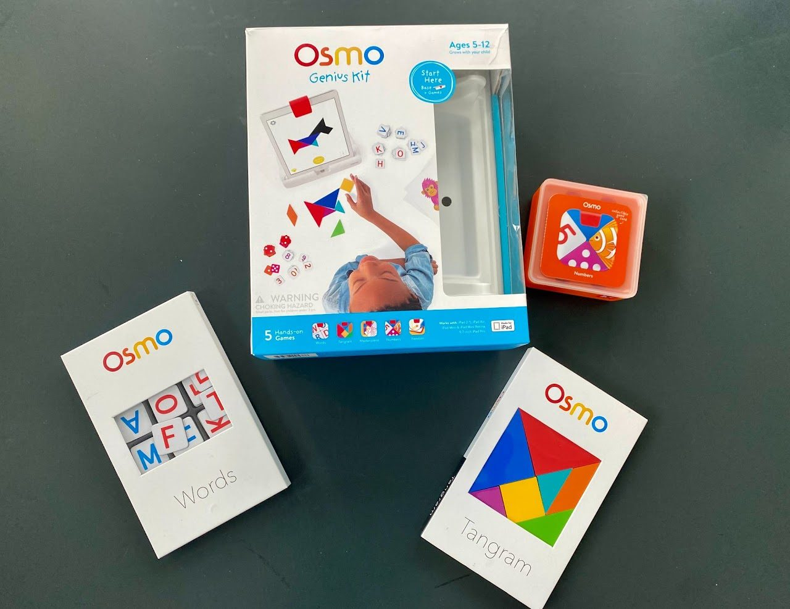
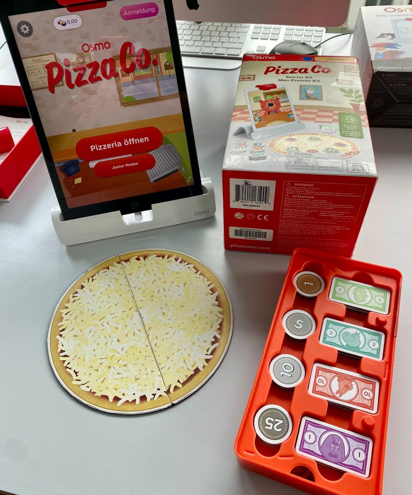

- Art des Spiels
- Digital-Physische Interaktion
- Plattformen
- iPad
- Genre
- Lernspiele (Sprache, Mathematik, Kreativität, Programmierung)
- Empfohlenes Alter
- 3 bis 12 Jahre (je nach Spiel)
- Spieleranzahl
- Einzelspieler und Mehrspieleroptionen
- Spieldauer
- Variabel; Nutzer können in ihrem eigenen Tempo lernen und spielen
- Schwierigkeitsgrad
- Einfach bis Mittel (angepasst an das Alter und die Fähigkeiten des Spielers)
Kurzbeschreibung
Osmo ist ein Bildungssystem, das digitale Spiele mit physischen Objekten verbindet, um eine interaktive Lernerfahrung zu schaffen. Das System besteht aus einem Basisständer für das Tablet und einem Reflektorspiegel, der über die Kamera des Tablets angebracht wird, um die Oberfläche vor dem Tablet in das Spielgeschehen einzubeziehen. Kinder interagieren mit physischen Spielsteinen (Buchstaben, Zahlen, Zeichenblöcke usw.), die von der Kamera erfasst und ins digitale Spiel integriert werden. Dies fördert die Entwicklung von Fähigkeiten in Bereichen wie Mathematik, Sprache, Wissenschaft, Kunst und sogar Programmieren, durch spielerisches Lernen und physische Interaktion.
Besondere Merkmale
Hybrides Lernmodell: Verbindet physisches Spielzeug mit digitalen Interaktionen für ein tiefgreifendes Lernerlebnis.
Breites Bildungsangebot: Abdeckung einer Vielzahl von Lernbereichen und Fähigkeiten.
Anpassungsfähig: Die Spiele passen sich dem Alter und den Lernfortschritten des Kindes an.
Besondere Anforderungen
Benötigt ein kompatibles iPad sowie das Osmo Starter Kit (Basisständer und Reflektorspiegel)
Lernpotenzial
Osmo fördert kritisches Denken, Kreativität, Problemlösungsfähigkeiten, Hand-Augen-Koordination und soziale Interaktion. Durch die einzigartige Kombination von physischem Spiel und digitaler Technologie entwickeln Kinder ein besseres Verständnis für die Materie und werden in ihrer Kreativität und Selbstständigkeit unterstützt.
Unterrichtsrelevanz
Osmo bietet Lehrkräften eine vielseitige Ressource, um den Unterricht interaktiv und individuell anzupassen. Es eignet sich für den Einsatz in Klassenzimmern, da es die aktive Beteiligung der Schülerinnen und Schüler fördert und gleichzeitig individuelle Lernwege unterstützt. Osmo kann in verschiedenen Unterrichtsszenarien eingesetzt werden, um den Lehrplan durch praktische Anwendungen und spielerisches Lernen zu ergänzen.
Links und Quellen
Offizielle Website: Play Osmo
Fazit
Osmo ist ein innovatives Lernwerkzeug, das die Vorteile digitaler Technologie mit dem wertvollen Aspekt des physischen Spielens vereint. Es bietet eine breite Palette an Bildungsinhalten, die auf unterhaltsame Weise präsentiert werden und sich ideal für den Einsatz im Klassenzimmer oder zu Hause eignen. Mit Osmo können Kinder in einer interaktiven und engagierenden Umgebung lernen, was die Entwicklung wichtiger Fähigkeiten wie Kreativität, Problemlösung und kritisches Denken fördert.

Coding Awbie
Einführung in die Grundlagen des Programmierens durch das Zusammenstellen von Blöcken, um Awbie, einen kleinen virtuellen Charakter, durch eine Welt voller Abenteuer zu führen. Es fördert logisches Denken und Problemlösungskompetenzen.
Osmo Genius Kit
Ein umfassendes Lernset, das Spiele zu Mathematik, Zeichnen, Sprache, Geographie und Physik enthält. Kinder können durch interaktive Aktivitäten ihre Fähigkeiten in diesen Bereichen spielerisch verbessern.


Osmo Pizza Co.
Osmo Pizza Co. kombiniert digitale Interaktivität mit physischen Spielkomponenten, um Kindern Grundkenntnisse in Mathematik und Unternehmertum auf spielerische Weise zu vermitteln. Spielerinnen führen ihre eigene Pizzeria, berechnen Wechselgeld, bedienen Kundinnen und passen ihre Pizzen an, um Problemlösungsfähigkeiten und mathematische Konzepte in einem realistischen Geschäftsumfeld zu erlernen.